Motifs haven’t been updated in this yet ref = “total_ratio” changed to “self” when using show_burden_for_selected_features Use a newly calculated set of motif change scores to define motif SNVs, but only focusing on motifs that more relevant Here motifs are defined as relevant if they are 1) in top 50% brain expressed genes, and 2) are enriched in at least one gain-enriched brain module Partition enhancers based on distance to TSS based on Yanyu’s pipeline. Basically, her pipeline takes intersections between enhancers and distance ranges, and remove bases of enhancers that are not overlap.
non ASD genes are the bottom 20% not plotting mutation is 5’UTR or 3’UTR added one row for showing the union of enhancers and promoters Only have Fantom, Noonan and Whole genome Look at more genesets.
Look at differentially regulated H3K27ac regions from Sun et al., Cell 2016
getwd()## [1] "/media/yuwen/F/ASD/analysis"knitr::opts_chunk$set(warning=FALSE, message=FALSE)## [1] "/media/yuwen/F/ASD/analysis"plot_summary = plot_summary[!is.na(plot_summary$gene_list),]
plot_summary = plot_summary[!duplicated(plot_summary),]
plot_summary = plot_summary[plot_summary$gene_list != "NP_genes",]
plot_summary = plot_summary[plot_summary$region_tag == "Promoter" | plot_summary$region_tag == "Promoter+10kb_enhancer" | plot_summary$region_tag == "1-10Kb",]
plot_summary$gene_list = factor(plot_summary$gene_list, levels = c("stringent_ASD", "TADA_top6_pct", "SCZ_composite","total"))#scaling factor for plotting, which is the burden of baseline. Used for 160229 data only
scaling = 0.73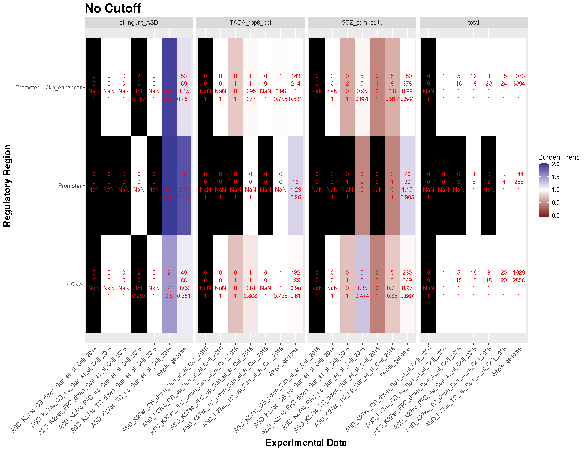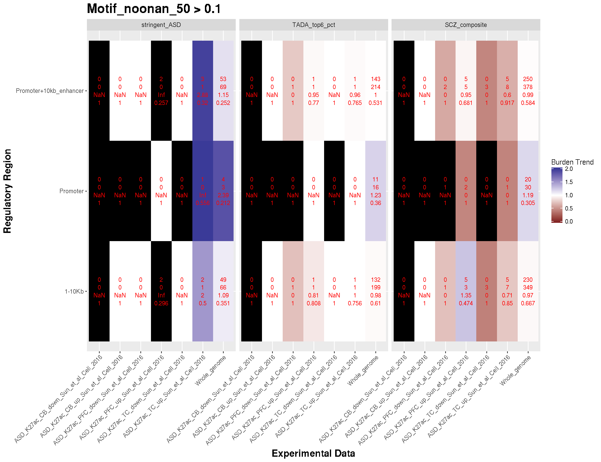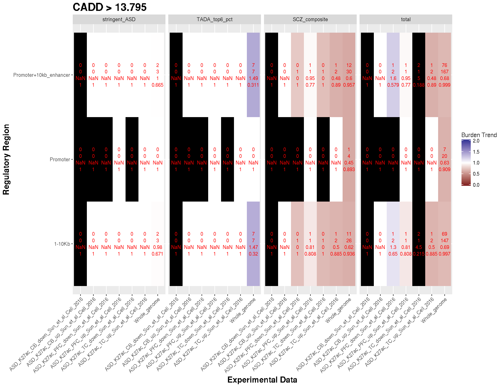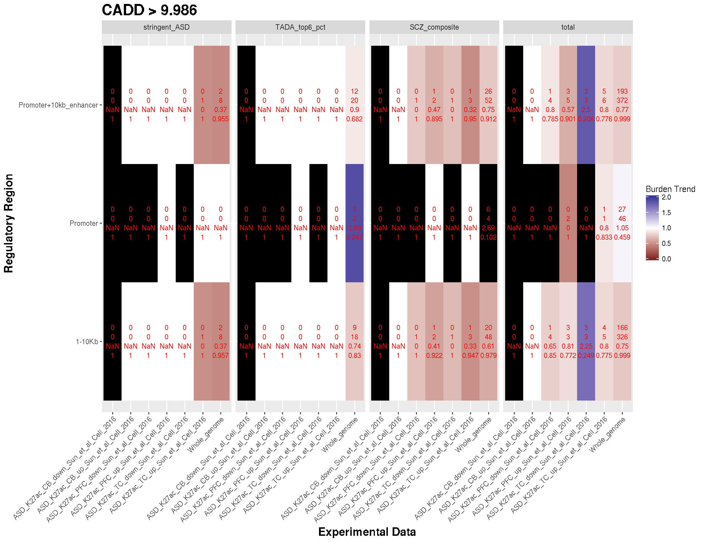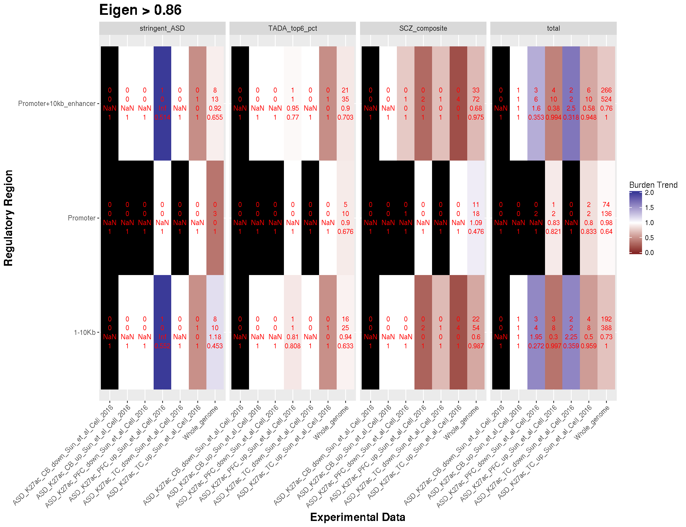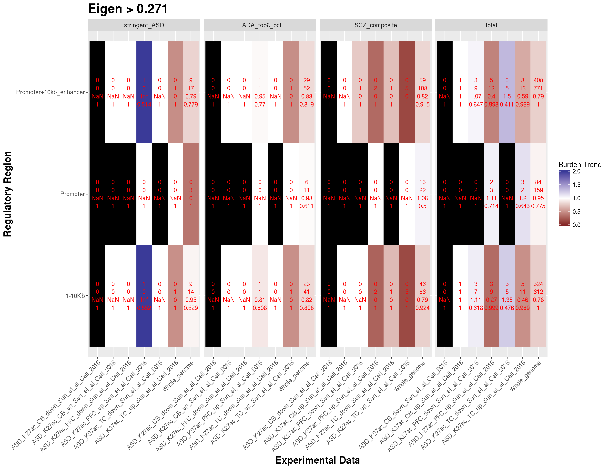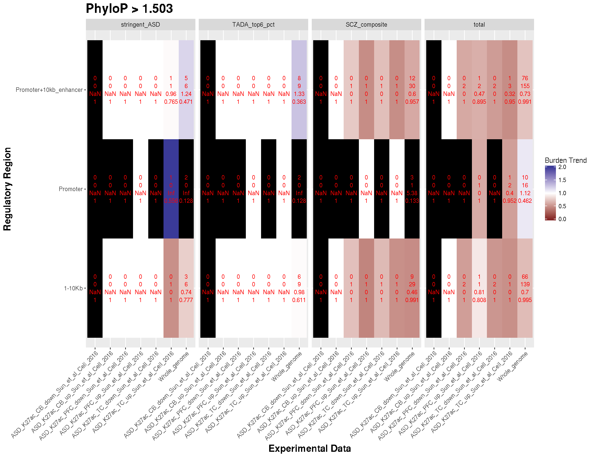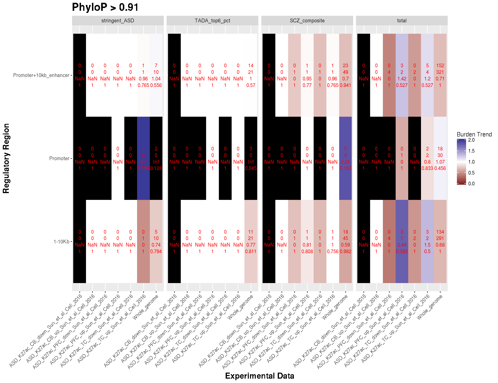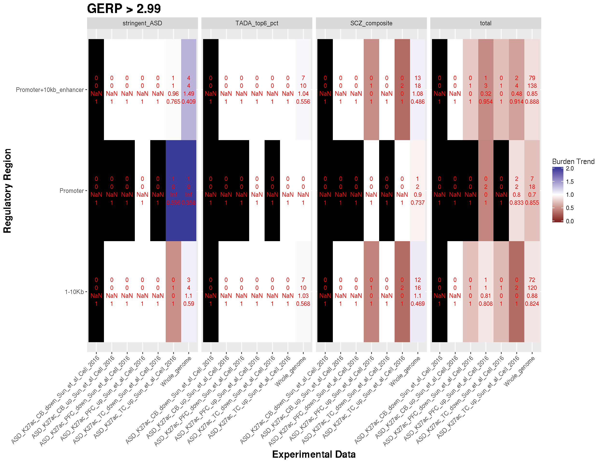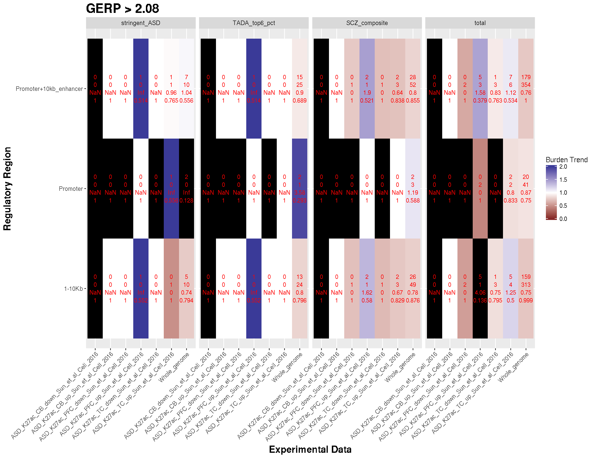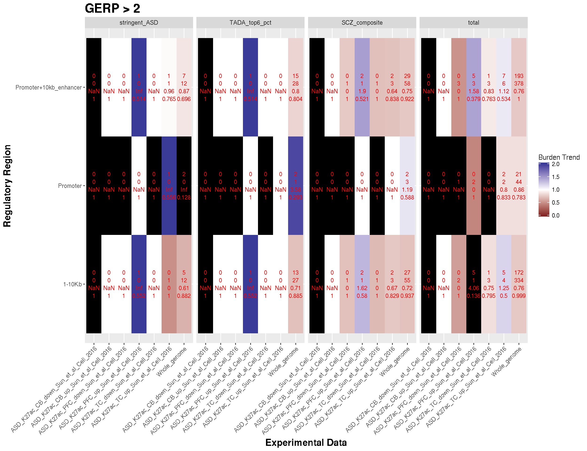